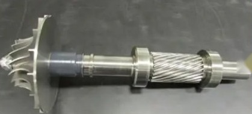
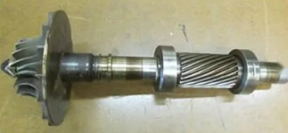
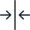

Ремонт и восстановление размеров
Высокопроизводительные решения для защиты оборудования от абразивного, коррозионного и эрозионного износа в самых сложных условиях эксплуатации.
Общее описание
Оборудование во всех отраслях промышленности неизбежно изнашивается. Вместо дорогостоящей замены мы предлагаем ремонт компонентов методом термического напыления. Технология позволяет не просто вернуть детали первоначальные размеры, но и нанести новый слой, который значительно улучшит характеристики и продлит срок службы узла.


-
Экономия бюджета
Стоимость ремонта составляет менее половины цены новой детали.
-
Минимум простоев
Восстановление занимает всего несколько дней вместо месяцев ожидания поставки.
-

Без деформаций
Процесс проходит без термических поводок, являясь идеальной альтернативой сварке.
-
Улучшение свойств
Возможность напыления материалов, превосходящих по стойкости оригинал.
Преимущества и возможности
-
Гибкость материалов
01Возможность восстановления как исходным материалом подложки, так и совершенно новыми защитными сплавами.
-
Комплексная защита
02Подбор покрытий, которые одновременно решают несколько проблем: например, абразивный износ + коррозия.
-
Модернизация узлов
03Изменение типа финишной обработки поверхности при восстановлении для повышения рабочих характеристик.
-
Сложный ремонт
04Работа с деталями, которые невозможно восстановить с помощью сварки или других классических технологий.
Реальный пример модернизации
Ремонт изношенной шейки вала из углеродистой стали с помощью напыления карбида вольфрама методом HVOF.
Результат:
Участок с новым покрытием получил значительно более высокую износостойкость, чем исходный вал, что кратно увеличило общий срок службы всей детали за небольшую часть стоимости её замены.
Материалы для ремонта
-
Металлы и сплавы
Сталь, нержавеющая сталь, алюминий, молибден, бронза, латунь, цинк.
-
Износостойкость и защита от эрозии
Керамика, хромовые сплавы, хастеллой, монель, никелевые сплавы.
-
Антикоррозийная защита
Специализированная керамика, хастеллой, монель, хромовые сплавы.